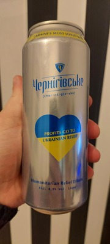

Вступ
Вітаю друзі, завдяки курсу по верстці наш сайт вже трохи краще виглядає. Розумію, що професійні властивості нашого верстальщика «бажають кращого», але проте безплатно, води і хліба йому достатньо. Ви можете бачити зміни кольорів на сторінці тексту, та жмякая по меню сайту, можете одразу уникнути всього тексту, та перейти до висновків, чим збережете свій дорогоцінний час!
Наш сайт не займається пропагандою алкоголю, він створений за для розваги і вашого розвитку.
Поговоримо
Но то погнали! Пивко! Беззаперечно є генільим творінням Єгиптян 3000 р до нашої ери. Ви тільки уявіть собі, наскільки воно старовинне. Вже є про що розповісти своїм друзям. На цьому можна було би вже закінчити статтю і розійтись по домам, але в нашому офісі не працює ліфт, а ми сидимо на 86 поверсі, так що самі розумієте, що не сильно то й додому хочеться, краще попрацювати.
Уявіть собі, що Вам не пощастило і народились людиною яка не любить пивко, це зрозуміло, ми всі не ідеальні. Сидите ви в компанії товаришів і немає пивка, одразу якесь дивне відчуття, що щось не так, якийсь дискомфорт . Аж раптом приходить наймиліша дівчина на світі і з підноса починає викладати на стіл бокали. В очах одразу блимнула іскра, мимоволі на устах з’являється посмішка, хтось щось одразу згадав і починає розповідати якусь можливо навіть не цікаву історію, фарби світу до окола починають ставати все яскравіше! Зверніть увагу, це ви ще навіть не зробили жодного ковтка!
Зараз ми поговоримо про вплив пивка на ваш стан. Пивко має поступовий ефект, починаючи сидіти з друзями в барі від, скажімо, 19 00 навіть після першої-другої пляшки ви не збагнете, що щось дуже змінилось, проте тема діалогу серед друзів буде змінюватись поступову зі зміною вашого стану. Ви будете піднімати теми, яких би ви не торкнулись будучі в сірому тверезому стані. Завдяки цьому ви будете краще пізнавати один одного. Психологічний фактор дуже важливий, пивко також допоможе вам виплакатись кращому другу чи подрузі. Пробудить у вас минулі спогади, як добрі так і погані. Від пива ви стаєте більшим, всім відомо, що доброї людини повинно бути багато, ваш живіт росте. Є в цьому дуже великі плюси ви виглядаєте соліднішим, жінки можуть використовувати як подушку і живіт також добре буде вам служити як підставка під пляшку, або бокал. Також пивко руйнує вашу пичінку, нирки, погіршує розумові властивості і ви можете навіть померти, але то не значні побочні ефекти перед чудовими плюсами цього нектару богів!
Волонтерка
Зараз хочу поговорити на серйозну тему, будьте уважні . Пиво також займається гуманітарною допомогую. Купуючи Чернігівське пивко за кордоном ви допомагаєте українцям які страждають від клятих кацапів. Всі кошти від продажу йдуть на допомогу.
Шана Чернігівському!
